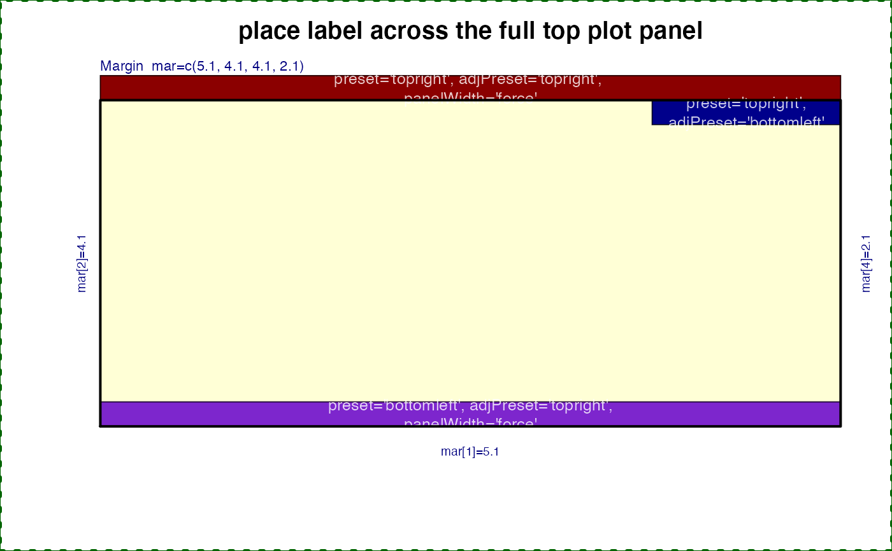
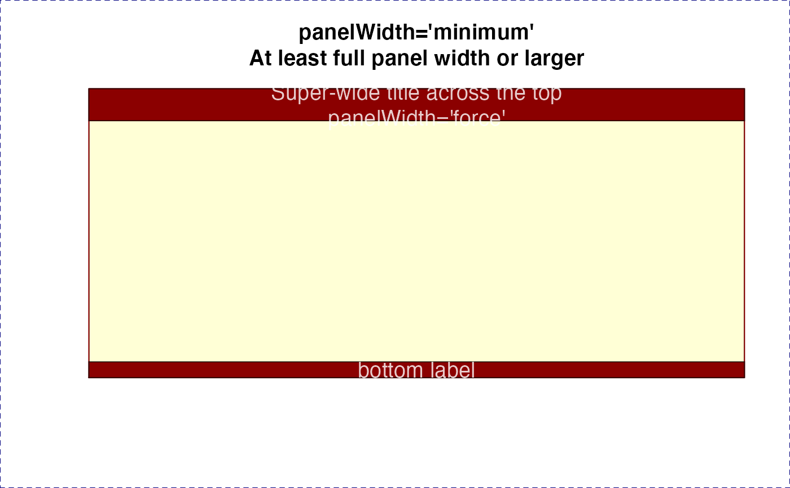
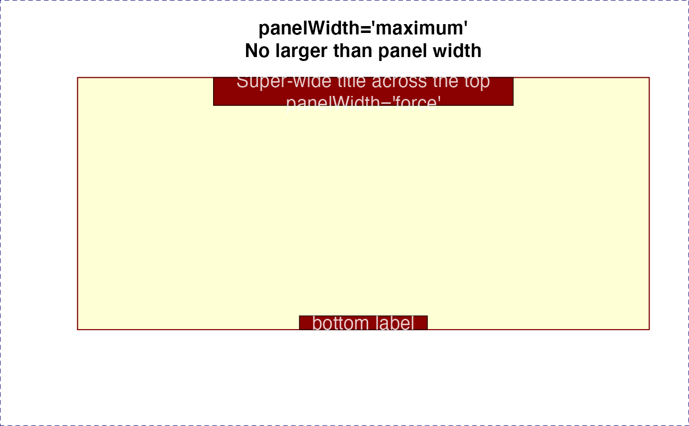
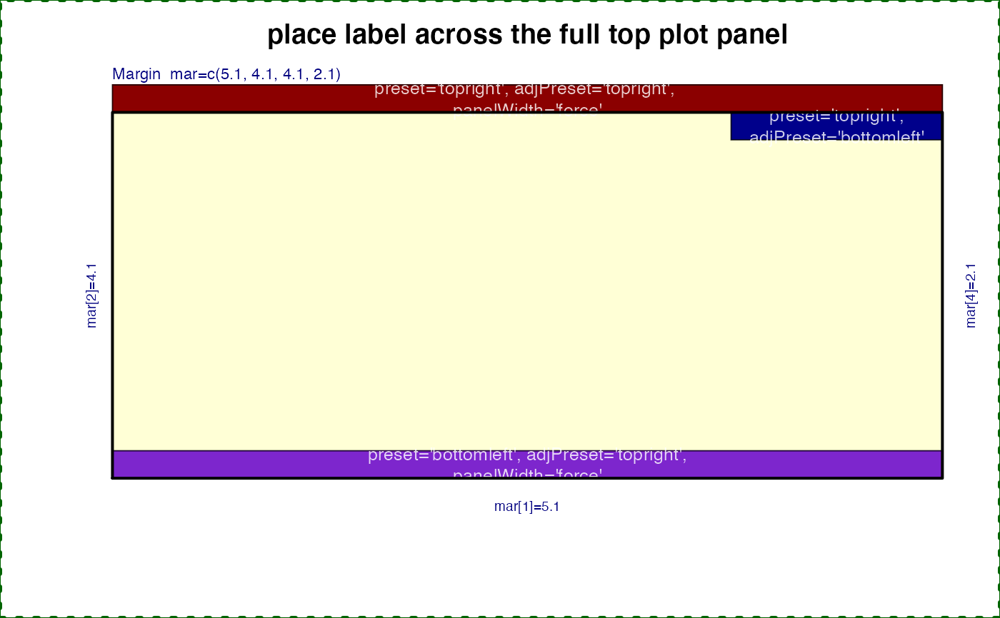
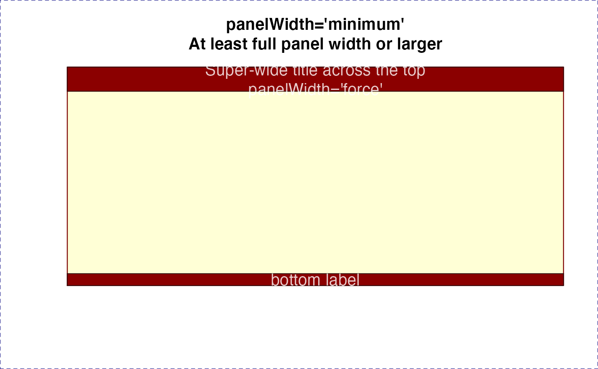
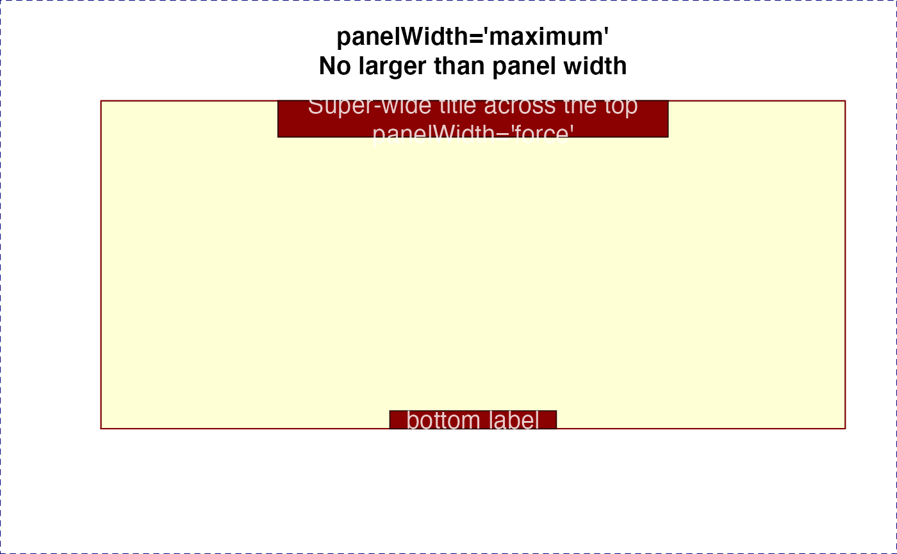

Draw text labels on a base R plot
Usage
drawLabels(
txt = NULL,
newCoords = NULL,
x = NULL,
y = NULL,
lx = NULL,
ly = NULL,
segmentLwd = 1,
segmentCol = "#00000088",
drawSegments = TRUE,
boxBorderColor = "#000000AA",
boxColor = "#FFEECC",
boxLwd = 1,
drawBox = TRUE,
drawLabels = TRUE,
font = 1,
labelCex = 0.8,
boxCexAdjust = 1.9,
labelCol = alpha2col(alpha = 0.8, setTextContrastColor(boxColor)),
doPlot = TRUE,
xpd = NA,
preset = "default",
adjPreset = "default",
preset_type = "plot",
adjX = 0.5,
adjY = 0.5,
panelWidth = "default",
trimReturns = TRUE,
text_fn = getOption("jam.text_fn", graphics::text),
verbose = FALSE,
...
)Arguments
- txt
charactervector of labels, length equal toxandy.- newCoords
data.frameoptional, typically as a result of a previous call todrawLabels(). In general, it should contain colnames equivalent to the function parameters ofdrawLabels().- x, y
numericvector of x- and y- coordinates.- lx, ly
numericoptional vector of segment endpoint coordinates, used to draw a line from x,y coordinates to the segment lx,ly coordinate.- segmentLwd, segmentCol
numericvector of segment line widths, andcharactercolors, respectively. Each vector will be recycled tolength(txt)as needed.- drawSegments
logicalwhether to draw segments, where applicable.- boxBorderColor
charactervector of colors used for the box border around each label.- boxColor
charactervector of colors used for the box background behind each label.- boxLwd
numericvector of box line widths, sent tographics::rect(), this vector will be recycled tolength(txt).- drawBox
logicalwhether to draw boxes behind each text label.- drawLabels
logicalwhether to draw each text label.- font
integervector of font values as described ingraphics::par(), where 1=normal, 2=bold, 3=italics, 4=bold-italics.- labelCex
numericvector of cex values used for text labels, recycled tolength(txt)as needed.- boxCexAdjust
numericvector length=2, used to expand the x-width and y-height of the box around around text labels.- labelCol
charactervector of label colors, by default it callsjamba::setTextContrastColor()to generate a color to contrast the background box color.- doPlot
logicalwhether to perform any plot operations. SetFALSEto calculate coordinates and return adata.frameof label coordinates, which can then be manipulated before callingdrawLabels()again.- xpd
logicalvalue compatible withgraphics::par("xpd"), where NA allows labels anywhere in the device region, TRUE retricts labels within the figure region, and FALSE restricts labels within the plot region.- preset
charactervector passed tocoordPresets()used to position text labels relative to the x,y coordinate, where "topleft" will position the label so the entire label box is top-left of the point, therefore the point will be at the bottom-right corner of the label box. Whenpresetis anything by"none"theadjXandadjYvalues are ignored.- preset_type, adjPreset
characterpassed tocoordPresets()to define orientation of each label relative to thex,ycoordinate.- adjX, adjY
numericthe text adjustment of labels relative to the x,y coordinate. The values are recycled tolength(txt).- panelWidth
characterstring or vector, recycled to the number of labels to be displayed. The argument indicates whether to size each label box relative to the plot panel width, intended when the labelpresetandadjPresetare set for the label to be inside the plot panel, e.g.preset="top", adjPreset="top", orpreset="topleft", adjPreset="topright". Either both are centered, or one is "right" and the other is "left". In these cases, the label box is expanded to the full plot panel width, thus filling the full visible x-axis range for the plot panel. Allowed values forpanelWidth:"default"size label boxes by text dimensions"force"size label to full plot panel width"minimum"size label at least the plot panel width, or larger if necessary to fit the text label"maximum"size label to the text label width, but no larger than the plot panel width
- trimReturns
logicalwhether to trim leading and trailing return (newline) characters from labels.- text_fn
functionused to render text, by default it checksgetOption("jam.text_fn", graphics::text)which then defaults tographics::text.This argument is specifically to enable
jamba::shadowText(), for exampletext_fn=jamba::shadowText.Previous to version 0.0.107.900, one could assign
text <- jamba::shadowTexthowever that option was removed to make jamba more compliant with recommended R code, and ready for CRAN.
- verbose
logicalwhether to print verbose output.- ...
additional arguments are passed to
graphics::segments()when segments are drawn, tographics::rect()when label boxes are drawn, and tographics::text()when text labels are drawn.
Value
invisible data.frame containing label coordinates used
to draw labels. This data.frame can be manipulated and provided
as input to drawLabels() for subsequent customized label
positioning.
Details
This function takes a vector of coordinates and text labels, and draws the labels with colored rectangles around each label on the plot. Each label can have unique font, cex, and color, and are drawn using vectorized operations.
To enable shadow text include argument: text_fn=jamba::shadowText
TODO: In future allow rotated text labels. Not that useful within a plot panel, but sometimes useful when draw outside a plot, for example axis labels.
See also
Other jam plot functions:
adjustAxisLabelMargins(),
coordPresets(),
decideMfrow(),
getPlotAspect(),
groupedAxis(),
imageByColors(),
imageDefault(),
minorLogTicksAxis(),
nullPlot(),
plotPolygonDensity(),
plotRidges(),
plotSmoothScatter(),
shadowText(),
shadowText_options(),
showColors(),
sqrtAxis(),
usrBox()
Examples
nullPlot(plotAreaTitle="");
dl_topleft <- drawLabels(x=graphics::par("usr")[1],
y=graphics::par("usr")[4],
txt="Top-left\nof plot",
preset="topleft",
boxColor="blue4");
drawLabels(x=graphics::par("usr")[2],
y=graphics::par("usr")[3],
txt="Bottom-right\nof plot",
preset="bottomright",
boxColor="green4");
drawLabels(x=mean(graphics::par("usr")[1:2]),
y=mean(graphics::par("usr")[3:4]),
txt="Center\nof plot",
preset="center",
boxColor="purple3");
graphics::points(x=c(graphics::par("usr")[1], graphics::par("usr")[2],
mean(graphics::par("usr")[1:2])),
y=c(graphics::par("usr")[4], graphics::par("usr")[3],
mean(graphics::par("usr")[3:4])),
pch=20,
col="red",
xpd=NA);
 nullPlot(plotAreaTitle="");
graphics::title(main="place label across the full top plot panel", line=2.5)
dl_top <- drawLabels(
txt=c("preset='topright', adjPreset='topright', \npanelWidth='force'",
"preset='topright',\nadjPreset='bottomleft'",
"preset='bottomleft', adjPreset='topright',\npanelWidth='force'"),
preset=c("topright", "topright", "bottomleft"),
adjPreset=c("topleft", "bottomleft", "topright"),
panelWidth=c("force", "none", "force"),
boxColor=c("red4",
"blue4",
"purple3"));
graphics::box(lwd=2);

opar <- graphics::par("mfrow"=c(1, 3), "xpd"=TRUE);
on.exit(graphics::par(opar));
isub <- c(force="Always full panel width",
minimum="At least full panel width or larger",
maximum="No larger than panel width");
for (i in c("force", "minimum", "maximum")) {
nullPlot(plotAreaTitle="", doMargins=FALSE);
graphics::title(main=paste0("panelWidth='", i, "'\n",
isub[i]));
drawLabels(labelCex=1.2,
txt=c("Super-wide title across the top\npanelWidth='force'",
"bottom label"),
preset=c("top", "bottom"),
panelWidth=i,
boxColor="red4")
}


graphics::par("mfrow"=c(1, 1));
nullPlot(plotAreaTitle="");
graphics::title(main="place label across the full top plot panel", line=2.5)
dl_top <- drawLabels(
txt=c("preset='topright', adjPreset='topright', \npanelWidth='force'",
"preset='topright',\nadjPreset='bottomleft'",
"preset='bottomleft', adjPreset='topright',\npanelWidth='force'"),
preset=c("topright", "topright", "bottomleft"),
adjPreset=c("topleft", "bottomleft", "topright"),
panelWidth=c("force", "none", "force"),
boxColor=c("red4",
"blue4",
"purple3"));
graphics::box(lwd=2);

opar <- graphics::par("mfrow"=c(1, 3), "xpd"=TRUE);
on.exit(graphics::par(opar));
isub <- c(force="Always full panel width",
minimum="At least full panel width or larger",
maximum="No larger than panel width");
for (i in c("force", "minimum", "maximum")) {
nullPlot(plotAreaTitle="", doMargins=FALSE);
graphics::title(main=paste0("panelWidth='", i, "'\n",
isub[i]));
drawLabels(labelCex=1.2,
txt=c("Super-wide title across the top\npanelWidth='force'",
"bottom label"),
preset=c("top", "bottom"),
panelWidth=i,
boxColor="red4")
}


graphics::par("mfrow"=c(1, 1));